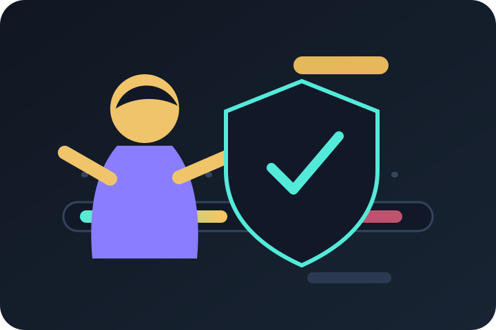
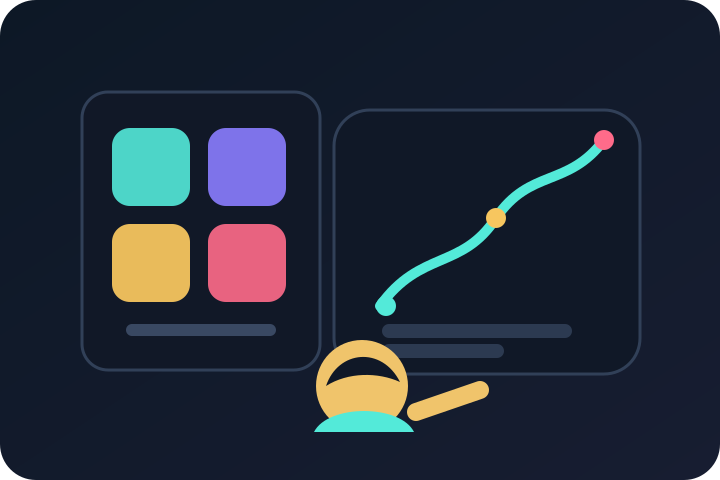

Review the signal
Start with the strategy output, then ask whether today's context supports acting on it.
Decision intelligence for systematic trading teams
AlphaWeave Capital helps systematic trading teams decide which assets, strategies, and AI-assisted actions deserve allocation before capital moves. It adds review, risk controls, sizing discipline, and performance attribution on top of existing models.
Strategy selection, asset fit, sleeve constraints, prior outcomes, and conviction sizing are reviewed before portfolio weights change.
What AlphaWeave Capital does
Systematic trading teams rarely need another black-box prediction engine. They need a disciplined way to review model output, compare alternatives, control downside, and explain why capital moved.
AlphaWeave Capital sits above existing strategies like an allocation committee for software-driven portfolios. It reviews the signal, checks market context, compares prior outcomes, applies mandate constraints, sizes conviction, and records what happened afterward.
The result is a repeatable decision layer for research and trading: clearer trade justification, cleaner performance attribution, and a memory loop that helps the next decision start from what the system has already learned.
The problem
Too many dashboards stop at BUY, SELL, or HOLD. AlphaWeave Capital asks which strategy to run, which assets to trade, and how much capital to deploy.
Good strategies still need allocation judgment. The platform checks market context, sleeve mandate, risk budget, similar history, and execution quality.
Performance needs attribution. See whether strategy rotation, strategy-aware asset selection, and conviction-based sizing actually added value.
Bring market context, strategy fit, asset fit, risk, history, and sleeve mandate into one decision view.
Translate reviewed confidence into a position size multiplier before portfolio and risk constraints are applied.
Turn realized decisions and execution outcomes into memory that improves the next review cycle.
Where it fits
Leading trading infrastructure often excels at one layer: execution speed, standardized strategy exposure, or standalone model prediction. AlphaWeave Capital is built for the decision layer above those pieces.
Execution quality matters, but the bigger question is whether the strategy, asset, mandate, and conviction justify the allocation.
Instead of relying on fixed universes and fixed weights, the system reviews strategy fit, asset fit, and current market context.
AI helps summarize and compare evidence; deterministic controls preserve the audit trail and portfolio discipline.
The pitch
Start with the strategy output, then ask whether today's context supports acting on it.

Before capital moves, exposure, drawdown, liquidity, net, gross, and beta constraints stay visible.

Each decision becomes part of the research memory, so the next review starts smarter.
What teams get
Why it matters
Your strategy can say BUY, SELL, or HOLD. AlphaWeave Capital helps answer the commercial questions behind the trade: is this the right strategy, is this the right asset set, should we size it differently, what could go wrong, and what happened when we saw this before?
Why this is different
Industry guidance keeps pointing to the same tension: AI can help process information faster, but trading teams still need explainability, model risk controls, data integrity, and supervision. AlphaWeave Capital is built around that reality.
AI workflows need review around explainability, data integrity, and privacy.
Trading controls Real-time controls stay central.AI trading needs monitoring and control frameworks, especially as models become less transparent.
Supervision Testing and explainability are not optional.AI use in financial workflows should be evaluated through governance, testing, and supervision.
AlphaWeave Capital is different because it is not trying to be a one-click trading oracle. It is a strategy-agnostic allocation overlay: review evidence, select assets and strategies, apply sleeve constraints, scale conviction through PSM, preserve the audit trail, and attribute what actually changed returns.
Why now
A large language model, or LLM, is an AI model trained to read and generate text. AlphaWeave Capital uses LLMs like specialist analysts for summarizing evidence and comparing context, while rules handle selection, risk, caching, and reporting.
Next step
Walk through how AlphaWeave Capital reviews signals, attributes performance, and keeps a reusable decision record without replacing your existing strategies.